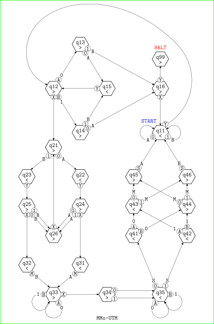
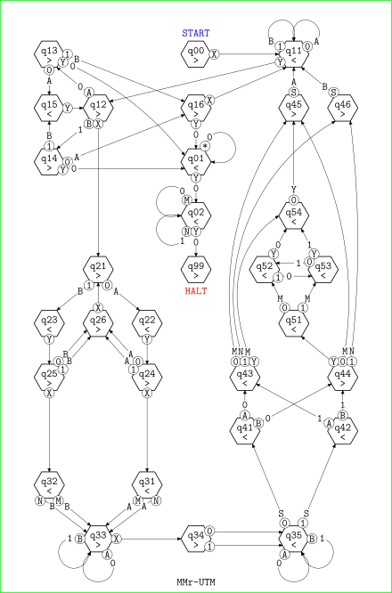
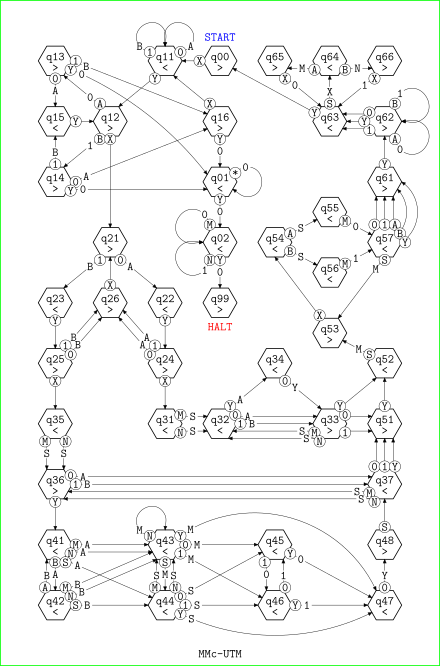

Click here to return to the main page
DOI: 10.6084/m9.figshare.32261133
This paper presents A Universal Turing Machine. In fact three universal Turing machines are presented in complete detail. To test them, a Turing machine interpreter coded in Lua was developed and uploaded to GitHub, so you can use it to test any Turing machine.
By the way we also explain why the original definition of universal machine by Turing has been superseded.
The ultimate reason why I have written this paper is to provide an accesible and foundational proof of the theorem of Turing completeness: there is a universal Turing machine. I defend that human language is a Turing complete language, where a Turing complete language is the language of a universal Turing machine. Therefore, to me, this theorem is the key to language, but I have problems with several of its proofs.
Some are not constructive. For example, section 3 in Davis (1958) chapter 4 is titled "A Universal Turing Machine" and is surprisingly footnoted thus: "The present section is a digression and may be ommited without disturbing continuity." In any case, the section explains that, since function U(min_y T(z,x,y)) is computable, which is the function in the normal form theorem, there is a Turing machine that implements it.
In addition, proofs that use recursion theory, as that by Davis (1958), are not foundamental enough. Recursion theory is founded on the counting numbers N, while computing theory is founded on the finite strings Γ* drawn from any alphabet Γ, where an alphabet is a completely ordered, finite and non-empty set of symbols. There is a bijection # between the set of the finite strings and the set of the counting numbers, ∀Γ, #: Γ* ↔ N, so they are somewhat at the same level, mathematically. But the counting numbers are code independent, expressing that they abstract encodings away, thus meaning that, in fact, the counting numbers are an abstraction over the strings.
That computing is more fundamental than recursion was already used in Gödel Incompleteness and Turing Completeness, where Gödel's incompleteness theorem of recursion is replaced by the more general and much simpler halting undecidability theorem of computing. And, in this paper, we are replacing Kleene's normal form theorem of recursion by the more general and much simpler Turing completeness theorem of computing.
The Turing machine is in a particularly nice spot. There are simpler computing devices, but they are less capable, some have the same capability, but they are more complex, and none is more capable. Turing (1936) analysis shows that the Turing machine is the simplest device capable of performing calculations in general. It is then a bit of a surprise that everything that is effectively calculable can be computed by some Turing machine. It is also surprising that some Turing machines can emulate any Turing machine. And both together imply astonishly that every specific universal Turing machine can compute anything that is effectively calculable.
The original universal machine by Turing is too complex, while some modern minimal universal Turing machines require too much difficult encodings. Fortunately, Minsky (1967) came to rescue.
This is the original universal Turing machine by Marvin Minsky, presented in Minsky (1967), §7. Following is a recreation of Fig. 7.2-9 in page 142, from which the table of MMo-UTM was read. MMo-UTM is a 8-symbol 24-state Turing machine. MMo-UTM can only emulate binary and singly left-infinite Turing machines.

MMr-UTM, which is very similar to MMo-UTM, is a 9-symbol 31-state Turing machine that can emulate any binary Turing machine. Following you can find its diagram.

Finally, MMc-UTM, a 9-symbol 44-state Turing machine that can emulate any Turing machine. Following you can find its diagram.

The theorem of Turing completeness says:
But, What is a universal Turing machine? For Davis (1956), following Turing, a universal Turing machine is a Turing machine that can “perform any computation which could be performed by any given Turing machine.” The problem with this definition is that it requires to make judgements on the behavior of programs. It is clear that a singly infinite tape has enough squares to compute any computation, and then MMo-UTM is universal under this definition. However, since its tape is only infinite to the left, we have to determine in advance how many squares to the right does each program require, and this is undecidable, as shown by Rice (1953).
Therefore, a better definition states that a universal Turing machine is a Turing machine that can emulate any Turing machine. This definition is more demanding and, for example, MMo-UTM, which is universal under Turing's definition, is not universal under this more stringent definition.
The git protocol was deprecated by GitHub
due to security reasons.
Therefore, the command in page 6
...$ git clone git://github.com/ramoncasares/UTM.gitdoes not work. Please use
...$ git clone https://github.com/ramoncasares/UTM.gitinstead.
Then, an advantage of the proof in this paper is that, being of the lowest level, it does not need any abstraction. Another advantage is that, neither depending on other theorems nor on equivalences with other formulations, it is self-contained. And together, concreteness and independency, show the foundational character of the proof of the theorem of Turing completeness given in this paper, sections §6 and §7.
In this paper, we have presented the whole table of a universal Turing machine that has not any limitation, that is conceptually simple, and that uses a straightforward encoding. These are qualities that make it a good foundational and constructive proof of the theorem of Turing completeness.
We reconstruct the didactic universal Turing machine by Marvin Minsky, MMo-UTM. We test it on a Turing machine interpreter coded in Lua, we comment on its limitations, and we enhance it twice: MMr-UTM, which can emulate any binary Turing machine; and MMc-UTM, which can emulate any Turing machine. The table of MMc-UTM is listed completely, with comments and an example of emulation. Since it has not any limitation and it uses a straightforward encoding, MMc-UTM makes a good constructive proof of the theorem of Turing completeness.
Link to the page of my paper on “A Universal Turing Machine” in figshare, and direct link to the pdf file.
These are the references cited in this page:
Versions:
Última actualización: 2026-06-29.
© Ramón Casares 2026